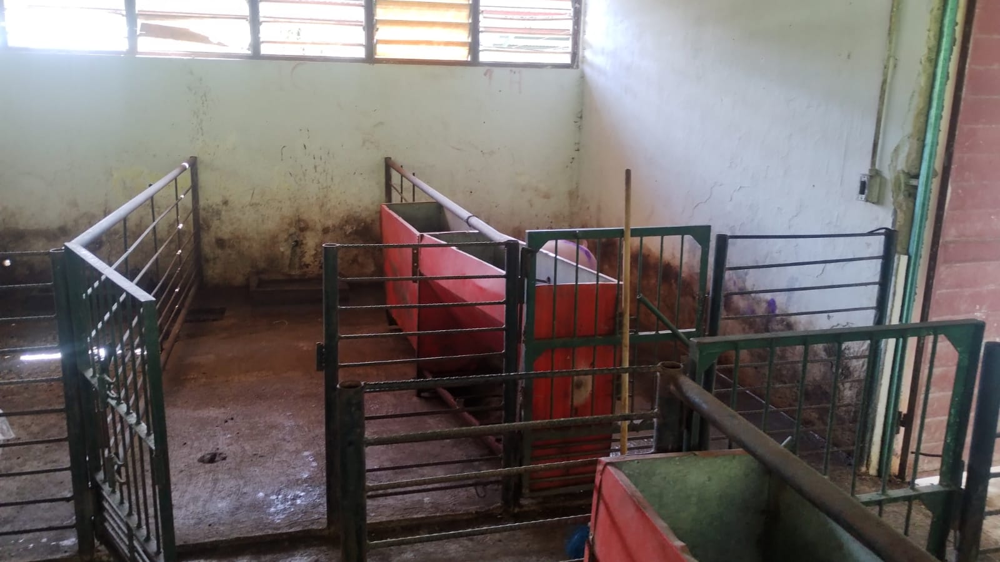

Instalaciones
Fotos del exterior
Nuestras instalaciones porcinas están pensadas para que los animales estén cómodos, seguros y en
un ambiente adecuado para su crecimiento. Todo está organizado de forma sencilla pero funcional,
para que el trabajo sea más fácil y los cerdos puedan desarrollarse mejor. Los corrales son amplios,
limpios y tienen buena ventilación, lo que ayuda a que los animales estén tranquilos y no se estresen.
También cuidamos la iluminación y la temperatura para que siempre estén en condiciones favorables.


Fotos del interiores
Cuentan con sistemas de alimentación y de agua que permiten que los cerdos siempre acceso a comida y
agua limpia. Esto es muy importante para que crezcan sanos y fuertes. La higiene es una parte clave
de nuestras instalaciones. Realizamos limpiezas y desinfecciones constantes para evitar enfermedades
y mantener todo en buen estado. Así protegen tanto a los animales como a las personas que trabajan aquí.

Además, las instalaciones están divididas por etapas como maternidad, destete, crecimiento y engorda.
Esto ayuda a llevar un mejor control de los animales y a darles la atención que necesitan en cada fase.
También, tratan de cuidar cuidar el medio ambiente, manejando los residuos de forma responsable y
manteniendo las áreas ordenadas. su objetivo es trabajar de manera organizada, responsable y con
un poco de profesionalismo


 Volver al Menú
Volver al Menú